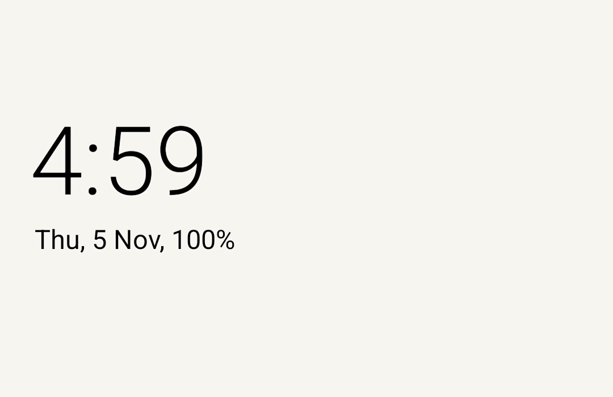
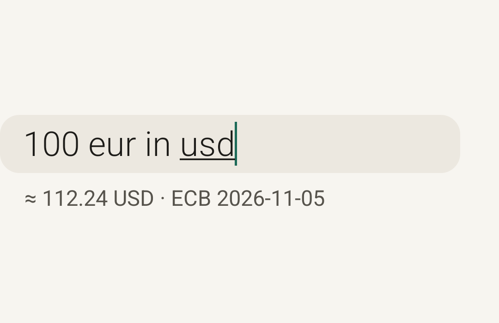

You go
first.
A home screen that waits for you to start.
Parem is directed by Patrick and written by AI coding agents, building on an open-source launcher. How it came to be

Give your phone a quieter first screen.
A clock, a date, and the apps you choose. No feed asking for your attention.
Open search to find an app, do a sum, convert a unit, or hand an alarm to your clock app. Then get on with your day.
Ask once.
Get an answer.
One search field handles the little things. Currency conversions use European Central Bank rates; new rates need a connection.
Example from a Play-debug emulator. The displayed rate is a recorded test result, not a live quote.
A little more
straight talk.
Who wrote it?
Patrick hasn't written a line of Parem. AI coding agents wrote the changes since the fork; Patrick directs the project. In Patrick's words: “i havent written a single line. olauncher was close but not it so i forked and vibed and then it diverged into parem and now we are here” The original launcher and its contributors remain part of its story. Read the story.
What has been checked?
The source, tests and CI runs are public. There has been no human code review, no independent security audit and no physical-phone pass of the release build yet.
What goes online?
Optional weather sends a city and rounded coordinates to Open-Meteo. Currency rates come from the ECB; optional wallpapers use a list and image hosts. These services receive connection details. Parem's preferences are excluded from Android cloud backup; device-to-device transfer can still copy them.
What should I know?
Limits and pauses are reminders, not locks, and work through Parem. On the Play build, grayscale needs a one-time grant from a computer. The light theme shown here is a setting. There are no ads, accounts or subscriptions.
Read the source on GitHubYour phone can wait.
The test is open. First join the tester group. Then, on your Android phone, open the test link with the same Google account and tap Become a tester.
1. Join the tester group 2. Open the test